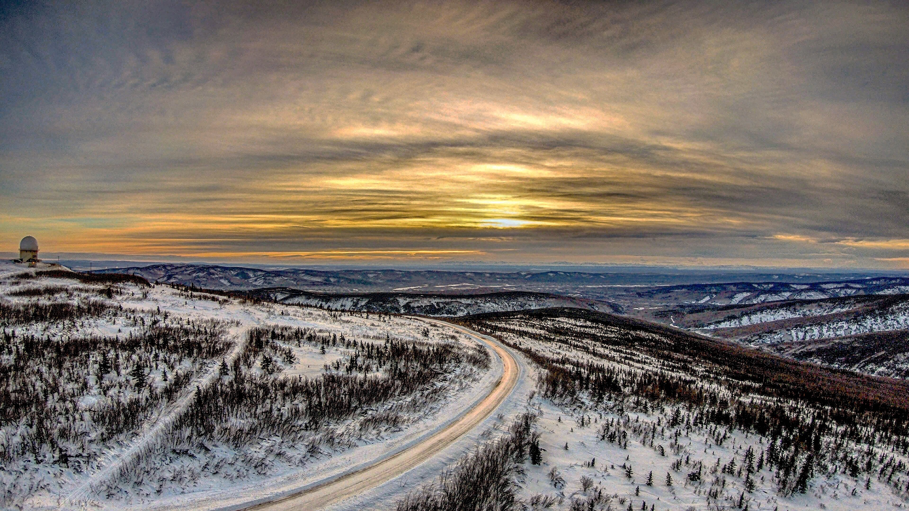
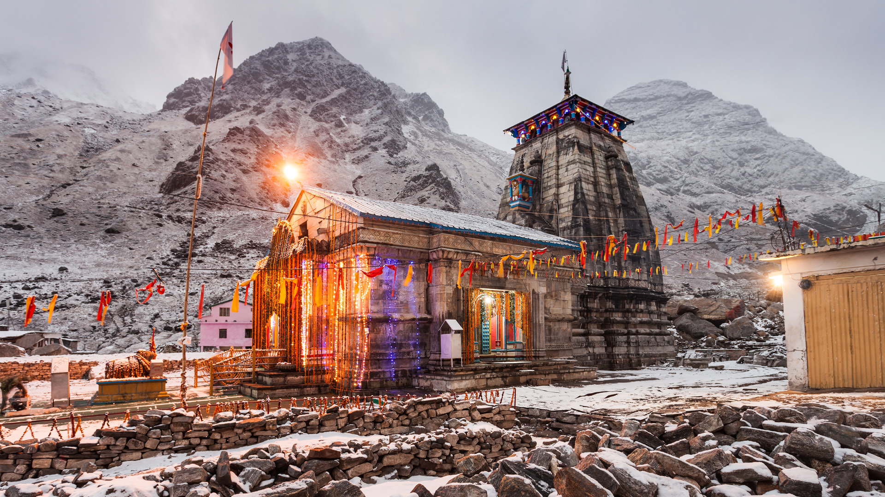

1st april,2021
Alaska
The name Alaska is derived from the Aleut alaxsxa or alaxsxix̂, both meaning “mainland” or “great land.” Indeed, Alaska has an immense area and a great variety of physical characteristics. Aside from its mainland peninsula, the state includes about 15,000 square miles (38,800 square km) of fjords and inlets and about 34,000 miles (54,400 km) of indented tidal coastline. In addition, most of the continental shelf of the United States lies along Alaska’s coast. In the Alaska Range north of Anchorage is Denali (Mount McKinley), 20,310 feet (6,190 metres) high—the highest peak in North America. Nearly one-third of the state lies within the Arctic Circle, and about four-fifths of Alaska is underlain by permafrost (permanently frozen sediment and rock). Tundra—the vast treeless Arctic plains—makes up about half of the state’s surface area.

20th nov,2021
Kedarnath
Kedarnath is a town in the State of Uttarakhand in India and has gained importance because of the Kedarnath Temple. It is a Nagar panchayat in Rudraprayag district. The most remote of the four Chota Char Dham Pilgrimage sites, Kedarnath is located in the Himalayas, about 3,583 m (11,755 ft) above sea level near Chorabari Glacier, the source of the Mandakini river, and is flanked by snow-capped peaks, most prominently the Kedarnath Mountain. The nearest road head is at Gaurikund about 16 km away. The town suffered extensive destruction during June 2013 from the Flash Floods caused by torrential rains in Uttarakhand state.Kedarnath is located at a distance of 223 km from Rishikesh in Uttarakhand and close to the source of the Mandakini River at the height of 3,583 m (11,755 ft) above sea level.
.jpg)
11th December,2021
South Islands
The South Island, also officially named Te Waipounamu,[1] is the larger of the two major islands of New Zealand in surface area, the other being the smaller but more populous North Island. It is bordered to the north by Cook Strait, to the west by the Tasman Sea, and to the south and east by the Pacific Ocean. The South Island covers 150,437 square kilometres (58,084 sq mi),[2] making it the world's 12th-largest island. At low altitude, it has an oceanic climate.The South Island is shaped by the Southern Alps which run along it from north to south. They include New Zealand's highest peak, Aoraki / Mount Cook at 3,724 metres (12,218 ft). The high Kaikoura Ranges lie to the northeast. The east side of the island is home to the Canterbury Plains while the West Coast is famous for its rough coastlines such as Fiordland, a very high proportion of native bush and national parks, and the Fox and Franz Josef Glaciers. The main centres are Christchurch and Dunedin. The